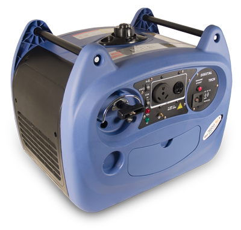

Introducing the 3600SI/E

Introducing the new 3600 SI/E with push button start.
Adding only 7 pounds, the electric start model still has the
highest power to weight ratio on the market. Easy to carry, and even easier to start.
The voltage is constantly adjusted to maintain 120V by the
computer inverter module while the lightweight compact
design makes the Boliy 3600SI and Boliy 3600SI/E ideal
for transportation and storage. Boliy digital generators
are equipped with the unique on-demand smart-throttle,
automatically regulating the engine speed according to
the load. This results in 40% less fuel consumption when
compared to traditional generators and extended running
time as well.
Click here to view the Boily Generator SI/E page.
20122Warranty includes full 2 year parts and labor coverage
plus 2 year emissions warranty.
Latest news
Introducing the newest Boliy 3600 SI/E with an electric start motor that makes life a little easier with a push of a button.
RV OWNERS - Looking to buy a Boliy, check out our list of Authorized Dealers: